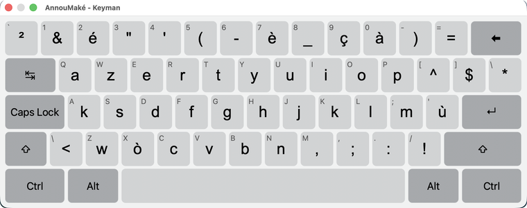

AnnouMaké
AnnouMaké (« Écrivons ! ») permet d'écrire le créole guadeloupéen avec les bons caractères,
selon la graphie du GEREC. C'est un clavier AZERTY : seules deux touches changent.
Ce qui change par rapport à l'AZERTY

- La touche Q donne k.
- La touche X donne ò (avec Maj : Ò).
- é, è, ç et à restent à leur place habituelle, sur les touches 2, 7, 9 et 0.
- Pour les capitales accentuées É È Ç À, activez le verrouillage des majuscules
(Verr. Maj) : la touche Maj, elle, donne les chiffres.
- L'accent circonflexe et le tréma fonctionnent comme d'habitude.
- Il n'y a ni q ni x, qui n'existent pas en créole guadeloupéen.
Pour écrire en français, revenez à votre clavier habituel.
Passer d'un clavier à l'autre
- Windows : touches Windows + Espace, puis choisissez AnnouMaké.
Si AnnouMaké n'apparaît pas juste après l'installation, redémarrez l'ordinateur.
- Mac : ajoutez d'abord Keyman dans Réglages Système → Clavier → Méthodes de saisie,
puis choisissez AnnouMaké dans le menu de saisie, en haut à droite de l'écran.
Voir le clavier à l'écran
Pas besoin d'apprendre les touches par cœur : un clavier visuel affiche ce que donne chaque touche.
- Windows : ouvrez une fois la configuration de Keyman (icône Keyman, près de l'horloge), puis
Paramètres → Clavier virtuel, et cochez Toujours afficher le clavier visuel.
Le clavier à l'écran s'affiche ensuite dès que vous choisissez AnnouMaké.
- Mac : AnnouMaké étant choisi, ouvrez le menu de saisie, en haut à droite de l'écran,
puis cliquez sur On-Screen Keyboard (le clavier à l'écran ; les menus de Keyman sont en anglais).
Ne regardez que les gros caractères : les petites lettres grises dans le coin des touches sont un
repère technique de Keyman, pas les lettres de votre clavier.
Le clavier visuel ne montre pas les capitales accentuées : É È À Ç s'obtiennent avec
Verr. Maj allumé, sur les touches é, è, à et ç.
Un clavier créé par POTOMITAN — potomitan.io